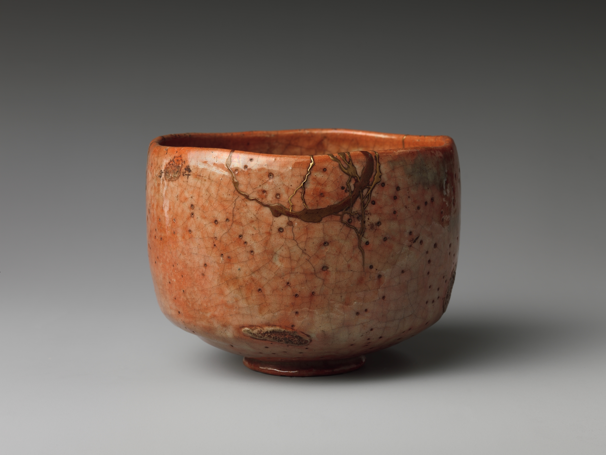

Between Tea and Ceramics
Holding a moment of tea in the palm of your hand. On vessels, beauty and everyday life in Japan.
2026.11.08JAPANESE CULTURE JOURNAL
THE JOURNAL
Tea, flowers, ceramics, kimono, food and ideas. Six ways into culture in everyday life.
1 story

Holding a moment of tea in the palm of your hand. On vessels, beauty and everyday life in Japan.
2026.11.08Collection photograph: The Metropolitan Museum of Art, CC0. Red Raku Tea Bowl, style of Hon’ami Kōetsu ↗
Brewing, tasting and pausing: stories around a moment of tea.
1 story02 / FLOWERSSeasonal flowers and the gesture of arranging them.
0 stories03 / CERAMICSClay and fire, makers and users: culture through vessels.
1 story04 / KIMONOWearing cloth, discovering colors, patterns and craft.
0 stories05 / FOODStories of place and season behind the table.
0 stories06 / IDEASPausing in daily life to consider how we see the world.
0 stories